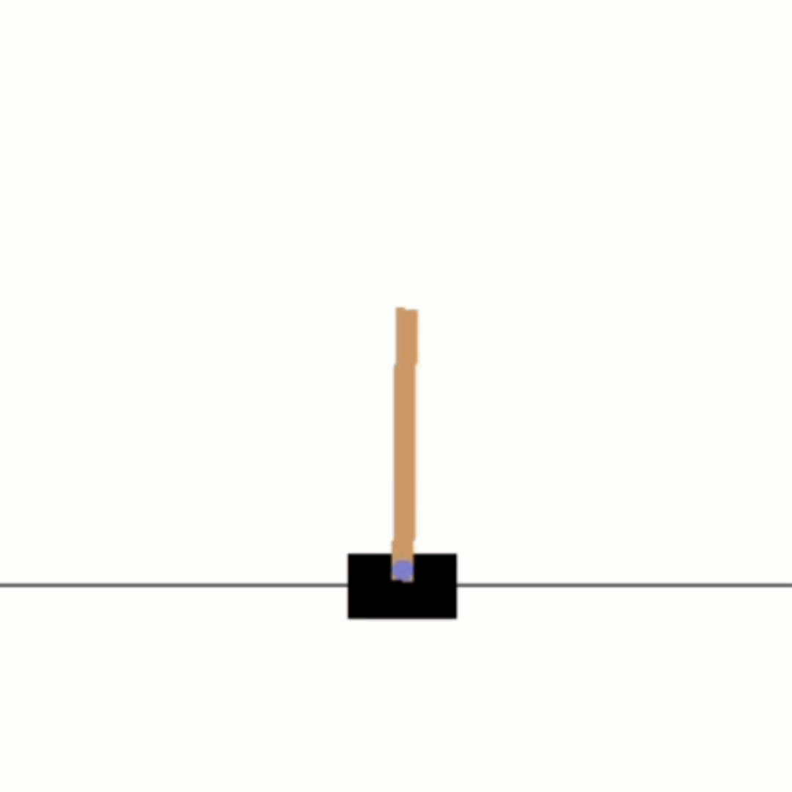

Multi-Cartpole¶
The multicartpole environment is an extension over the cartpole-v1 environment native to OpenAI Gym environments, where a cart is sliding over a flat surface and a pole is attached to the the middle of the cart at one end with frictionless turning joint. With multicartpole environment, we provide you the possibility to simulate multiple cartplole-v1 evrironments from gym. The goal of this environment is to maintain vertical position of the pole on the cart and stopping it from falling over with the aid of pushing the cart to left or right. The multicartpole environment is visualized in the image below
{kind=link}


This multicartpole environment can be imported via:
import mlpro.rl.pool.envs.multicartpole
The multicartpole environment can simulate ‘n’ number of cartpole-v1 environmments simultaneously, where the parameter ‘n’ can be set while instantiating the environment. The multicartpole environment can be instantiated as an mlpro environment class by including
env = MultiCartPole(p_num_envs=3, p_logging=p_logging)
The multicartpole environment consists of ‘n’ number of internal cartpole-v1 gym environments running simultaneously. The environment starts with random state values and the agent computes actions based on the policy. As there are multiple sub-environments running simultaneously, MLPro offers agent object of type multi-agent, where a number of agents simultaneously simulate corresponding sub-environments. The agent computes an action value of 1 or 0 which refers to a left or right push respectively to the cart. These actions computed by the agents are processed in the corresponding gym sub environment through the MLPro to Gym wrapper functionality of MLPro. The output from the gym sub-environments is the set of new state values and the state flags including success, done, error. The new state of the multicartpole environment is a set of states of all internal sub-environments. The terminal state of multicartpole environment reaches when all the sub-environments are at a terminal state. The sub-environemnt which are terminal before the rest of the sub-environemnts the sub-environment is frozen until the rest of the sub-environemnts are frozen. For better understanding of the multi-cartpole environment and its implementation refer to this example implementation. Running this example implementation of multi-cartpole environment will produce visualisation as in the image below

Prerequisites¶
For the multicartpole environment to run properly please install the following python packages:
General Information¶
Parameter |
Value per sub-environment |
|---|---|
Agents |
1 |
Native Source |
MLPro |
Action Space Dimension |
[2,] |
Action Space Base Set |
Integer number |
Action Space Boundaries |
[0,1] |
State Space Dimension |
[4,] |
State Space Base Set |
Real number |
Reward Structure |
Overall reward |
Action Space¶
Since the goal of the environment is to maintain the upright position of the cart, the cart is pushed to right or left for every run of the scenario. The action space for the multicartpole environment consists of push actions +1 and 0, denoting push towards right and left respectively. The size of the action space however is directly proportional to the number of child cartpole-v1 environments running within the multicartpole environment, for example a multicartpole environment for 3 sub environments has an action space of size 3.
Action |
Value |
|---|---|
Push Left |
0 |
Push Right |
1 |
Note
The action space for muticartpole environment consists of action spaces for all the sub-environments within the environment. Each of the action space actuates the assigned agent or muti-agent for the subenvironment. To know more about the the multi-agent class functionality native to MLPro refer to the appendix section.
State Space¶
The state space for the muticartpole environment returns state of every subenvironment within the environment including position of cart, velocity of cart, position of angel and the angular velocity of the pole. The states for a single cartpole environment running inside the multicartpole environment can be understood by the table below.
State |
Boundaries |
|---|---|
Cart Position |
[-2.4,2.4] |
Cart Velocity |
|
Angle of pole |
[-0.209,0.209] |
Angular Velocity of Pole |
The states of the muticartpole environment also return some flags giving additional information about the environment which includes
Initial: The flag initial is set to true when an environment has been instantiated or has been reset after a successful or unsuccessful scenario run. The intital flag denotes that there are no adaptations made yet.
Success: The success flag returns true whem a multicartpole environment has successfully run a scenario for a specified number of cycles. To run an environment sucessfully, the corresponding states of all the sub environments are within the boundaries as specified in the above table for the number of cycles specified. The scenario ends after the maximum number of cycles specified.
Broken: The broken flag return true when the multicartpole environment is unsuccessful to run for the specified number of cycles. The broken state is set to true when the corresponding states of any sub-environments exceeds the state boundaries as mentionaed in the table above.
Terminal: The flag terminal state defines end of an episode or end of a successful scenario of the multicartpole environment. The flag terminal is set to true when the either of the flags sucess or broken are true. The terminal flag is also set to true if the cycle extends the latency time or at the timeout. Once, the terminal flag is set to true, the environment terminates or resets based on the type of run and number of cycles.
More information about these state parameters related to the multi-cartpole environment can be found in the module descriptions.
Reward Structure¶
For multicartpole environment, an overall reward is awarded to the multi-agent. In a single sub-environment of cartpole-v1 a reward value of 1 is returned for every successful cycle run, keeping the states within boundaries. Subsequently, the reward awarded by the multi-cartpole environment is the weighted average of the rewards returned by every internal cartpole-v1 environment.
Change Log¶
Version |
Changes |
|---|---|
1.2.6 |
This is the first version for the multicartpole environment release |
Cross Reference¶
Refer these documents for further understanding of MLPro Multicartpole environment and other functionalities of MLPro